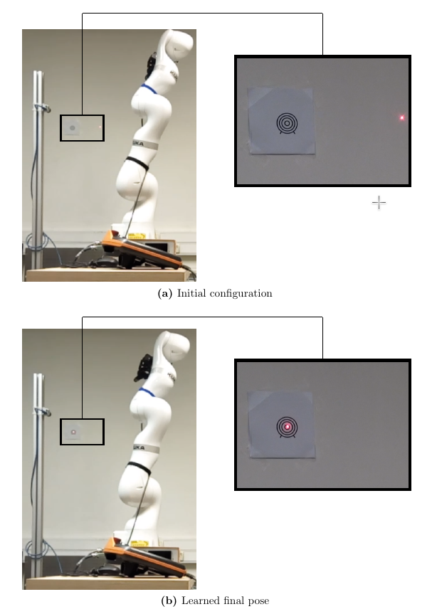
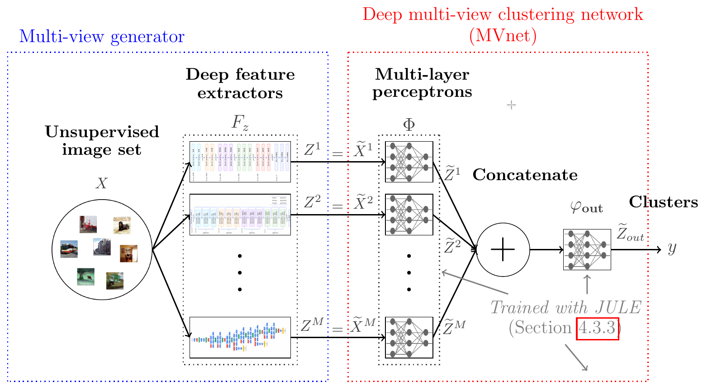
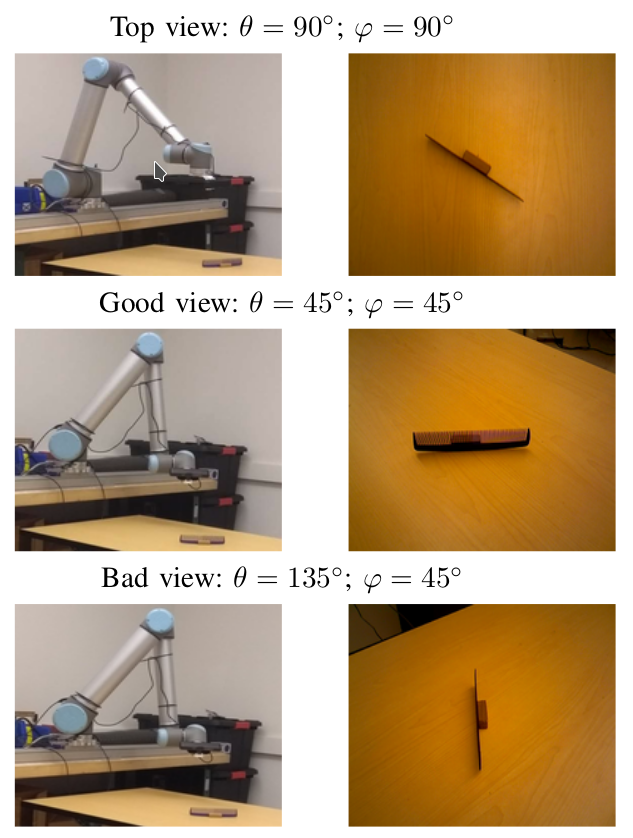
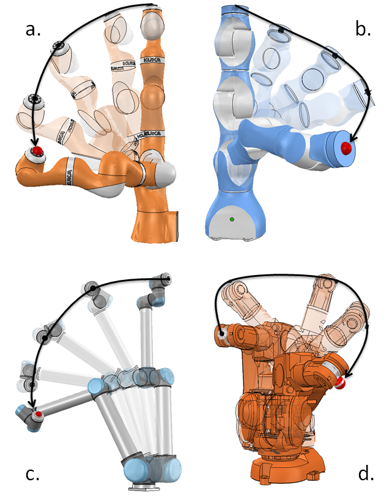

|
I received a Ph.D. in computer science and signal processing in 2018, from Arts et Métiers ParisTech, Lille, France. Before that, I received the diplôme d'ingénieur (equivalent to M.Sc. degree) from Arts et Métiers ParisTech and the M.Sc. in Industrial Engineering from Texas Tech University, both in 2015. I am currently a postdoctoral researcher at Universidade Federal Fluminense, and a research engineer at Isabo.ai. My research interest includes Reinforcement Learning for real robotics systems, Unsupervised sorting of real world objects, deep ensemble methods for Image Clustering, object detection from synthetic images and person re-identification.
| Home |
Publications |
Teaching |
Videos |
Blog articles |
News
-
December 2019: My Ph.D. thesis entitled Machine learning improvements for robotic applications in
industrial context: Case study of autonomous sorting is now available for download.
-
February 2019: I started a postdoc at UFF under supervision of profs Esteban Clua and José Viterbo.
-
February 2019: Started to work as a research engineer at Isabo.ai.
-
December 2018: My defense went well and my Ph.D. thesis has been proposed for the Prix Bézier 2018.
-
July 2018: Our paper Improving Image Clustering With Multiple Pretrained CNN Feature Extractors has been accepted at BMVC 2018.
-
June 2018: Our paper Semantically Meaningful View Selection has been accepted at IROS 2018.
Relevant publications
|
 |
Machine learning improvements for robotic applications in industrial context:
Case study of autonomous sorting
Joris Guérin
Ph.D. dissertation (2018)
[PDF]
[bibtex]
[presentation]
Thanks to their flexible mechanical design, modern industrial robots can be programmed
for different tasks without physical modification. In addition, they are highly
instrumented and should be able to be responsive to their environment. However,
the use of robots in industry is still restricted to repeatable tasks with low level
of adaptability. In an industrial context, it is essential to program robots that can
autonomously adapt to different applications and are robust to changes in working
conditions. The machine learning framework for robot programming is well suited to
design such kinds of adaptive and robust applications. Hence, in this thesis, several
machine learning contributions are presented, aiming at designing smarter robotic
applications, with a broader operational range. The methods developed are centered on
autonomous sorting, but may be useful to address problems in many other subfields
of robotics. Throughout this thesis, we propose new approaches to image clustering,
optimal view selection, trajectory learning and stereo localization, with the objective
of designing more universal robotic sorting applications.
|
|
 |
Improving Image Clustering With Multiple Pretrained CNN Feature Extractors
Joris Guérin, Byron Boots
British Machine Vision Conference (BMVC), 2018
[PDF]
[arXiv]
[bibtex]
[poster]
For many image clustering problems, replacing raw image data with features extracted by a
pretrained convolutional neural network (CNN), leads to better clustering performance.
However, the specific features extracted, and, by extension, the selected CNN architecture,
can have a major impact on the clustering results. In practice, this crucial design choice
is often decided arbitrarily due to the impossibility of using cross-validation with
unsupervised learning problems. However, information contained in the different pretrained
CNN architectures may be complementary, even when pretrained on the same data. To improve
clustering performance, we rephrase the image clustering problem as a multi-view clustering (MVC)
problem that considers multiple different pretrained feature extractors as different "views" of
the same data. We then propose a multi-input neural network architecture that is trained
end-to-end to solve the MVC problem effectively. Our experimental results, conducted on three
different natural image datasets, show that: 1. using multiple pretrained CNNs jointly as feature
extractors improves image clustering; 2. using an end-to-end approach improves MVC; and
3. combining both produces state-of-the-art results for the problem of image clustering.
|
|
 |
Semantically Meaningful View Selection
Joris Guérin,
Olivier Gibaru,
Éric Nyiri,
Stéphane Thiery,
Byron Boots
International Conference on Intelligent Robots and Systems (IROS), 2018
[PDF]
[arXiv]
[bibtex]
[presentation]
[data]
An understanding of the nature of objects could help robots to solve both
high-level abstract tasks and improve performance at lower-level concrete tasks.
Although deep learning has facilitated progress in image understanding, a robot's
performance in problems like object recognition often depends on the angle
from which the object is observed. Traditionally, robot sorting tasks rely on
fixed top-down views of the objects. By changing its viewing angle, a robot
can select a more semantically informative view leading to better performance
for object recognition. In this paper, we introduce the problem of semantic
view selection, which consists in finding good camera poses to gain semantic
knowledge about observed objects. We propose a conceptual generic formulation
of the problem, together with a relaxation based on clustering, to make it
solvable. We then present a new image dataset consisting of around 10k images
representing various views of 144 objects under different poses. Finally we use
this dataset to propose a first solution to the problem by training a neural
network to predict a ``semantic score'' from a top view image and camera pose.
The views predicted to have higher scores are then showed to provide better
clustering results than fixed top-down views.
|
|
 |
Learning local trajectories for high precision robotic tasks :
application to KUKA LBR iiwa Cartesian positioning
Joris Guérin,
Olivier Gibaru,
Éric Nyiri,
Stéphane Thiery
IECON 2016
[PDF]
[arXiv]
[bibtex]
[presentation]
[video]
To ease the development of robot learning in industry, two conditions need
to be fulfilled. Manipulators must be able to learn high accuracy and precision
tasks while being safe for workers in the factory. In this paper, we extend
our previous paper,
which consist in rapid learning of local high accuracy behaviors. By exploration and regression,
linear and quadratic models are learnt for respectively the dynamics and cost function.
Iterative Linear Quadratic Gaussian Regulator combined with cost quadratic regression
can converge rapidly in the final stages towards high accuracy behavior as the cost
function is modelled quite precisely. In this paper, both a different cost function
and a second order improvement method are implemented within this framework. We also
propose an analysis of the algorithm parameters through simulation for a positioning task.
Finally, an experimental validation on a KUKA LBR iiwa robot is carried out. This collaborative
robot manipulator can be easily programmed into safety mode, which makes it qualified for the
second industry constraint stated above.
|
|
Awesome webpage...
|